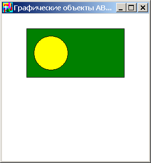
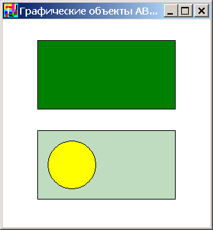

Класс ContainerABC представляет собой контейнер графических
объектов. Он также является потомком ObjectABC, но при
создании не содержит ни одного объекта. Он добавляет следующий интерфейс:
procedure Add(g: ObjectABC);
property Count: integer; // количество объектов
property Objects[i: integer]: ObjectABC; // i-тый объект
При масштабировании ContainerABC производится масштабирование
всех входящих в него объектов. При добавлении объекта в ContainerABC
его свойство Owner становится равным этому ContainerABC. При
присваивании свойству Owner объекта его владелец меняется, при этом
объект перерисовывается как принадлежащий новому владельцу. При присваивании
свойству Owner объекта значения nil он перестает иметь владельца и
отображается непосредственно в графическом окне.
Рассмотрим следующую программу:
uses ABCObjects,GraphABC;
var
c1,c2: ContainerABC;
r: CircleABC;
begin
SetWindowSize(300,300);
c1 := new ContainerABC(50,30);
c1.Add(new RectangleABC(0,0,200,100,clGreen));
r := new CircleABC(15,15,70,clYellow);
end.
После ее запуска графический экран имеет вид:
Контейнер c1 содержит
зеленый прямоугольник, а объект r не имеет владельца (r.Owner=nil). Нетрудно убедиться, что ObjectsCount=2 (контейнер
и круг), а c1.Count=1.
Добавим круг в контейнер, дописав в конец программы строчку
c1.Add(r);
После запуска программы графический экран примет вид:

Круг r теперь принадлежит
контейнеру (r.Owner=с2),
ObjectsCount=1 (только контейнер), а
c1.Count=2. Кроме этого, координаты круга пересчитываются
относительно координат контейнера-владельца (они по-прежнему равны (15,15), но
относительно левого верхнего угла контейнера c1).
Такой же эффект можно было получить от оператора
r.Owner := c1;
Создадим второй контейнер c2
и поменяем владельца у r
на c2. Для этого допишем в
конец строки:
c2 := new ContainerABC(50,160);
c2.Add(new RectangleABC(0,0,200,100,clMoneyGreen));
r.Owner := c2;
После запуска программы графический экран примет вид:

Как мы видим, круг r поменял
владельца, и теперь имеет координаты (15,15), но относительно левого верхнего
угла нового владельца c2.
Если вместо строчки r.Owner:=c2;
написать r.Owner:=nil; , то круг
r потеряет владельца и снова будет позиционироваться
относительно левого верхнего угла экрана: